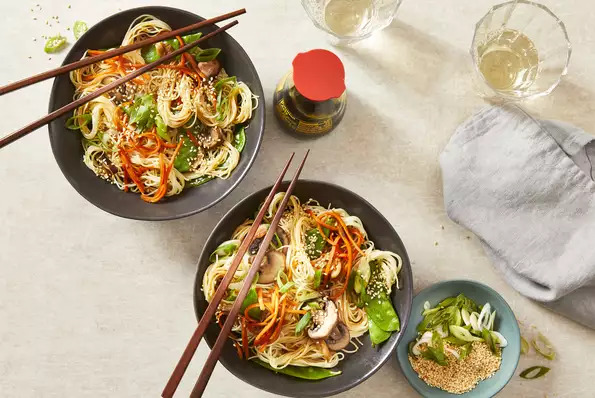

This simple noodle bowl recipe is super adaptable.
Feel free to swap out the mushrooms and snow peas for other quick-cooking veggies, such as broccoli, cabbage, or green beans.
Ingredients
- 2 tablespoons vegetable oil
- 1 cup sliced fresh mushrooms
- 1 cup snow peas
- ¾ cup shredded carrot
- 4 medium (4-1/8" long)s green onions, sliced
- 1 clove garlic, minced
- ¼ cup reduced-sodium soy sauce
- 1 teaspoon white sugar
- ¼ teaspoon cayenne pepper
- 8 ounces cooked spaghetti
- 1 tablespoon toasted sesame seeds
Steps
- Heat oil in a skillet over medium-high heat.
- Add mushrooms, snow peas, carrot, and green onions.
- Cook, stirring, until crisp-tender, about 4 minutes.
- Add garlic; cook 1 minute more.
- Stir together soy sauce, sugar, and cayenne in a small bowl; pour into skillet.
- Add cooked spaghetti and toss to coat.
- Cook until heated through, about 1 minute.
- Sprinkle with toasted sesame seeds.
Return to Top
Return to Main Page